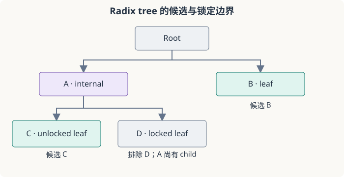
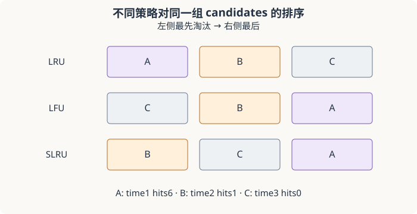

第 43 章 · SGLang 生产系统
Radix Eviction Policies：从 LRU 到 Tail Latency 与 State Cost
缓存不足时应该先回收哪个 leaf？如何把重算代价和延迟目标变成可解释策略？
缓存不足时应该先回收哪个 leaf？如何把重算代价和延迟目标变成可解释策略？ 从具体反例出发，连接算法、工程接口与测量边界。
1. 淘汰策略只打分，不决定全部资源管理
Radix cache 的 eviction 首先过滤 eligible leaves：KV 存在、无 request lock、没有仍持有 KV 的 child；root 永不淘汰。policy 只给候选打分，allocator/scheduler 决定要释放多少。删除 leaf 后 parent 可能成为新候选，因此不是一次全树排序就结束。

2. LRU、LFU、SLRU 与优先级
LRU 用 last_access_time；LFU 用 (hit_count,last_access_time)；SLRU 用 (hit_count≥threshold,last_access_time) 将 probationary 节点放在前面；priority 用 (request_priority,last_access_time)。最小 score 先淘汰。源码中的 SLRU 是评分分段，不应套用另一个系统的固定容量 protected queue。
3. T-LRU：缓存足够满足下一轮 TTFT
令 L 为会话历史 high-water 长度，Q 为预计下一轮新增 tokens，ξ 为允许 uncached tokens 的预算，保留目标 R=max(L+Q−ξ,0)。若当前可复用 cached prefix H，叶长度 d，则 H−d≥R 才可优先回收。L=1000、Q=100、ξ=300 ⇒ R=800；H=1000、d=100 可以回收，H=800 时再回收便越界。L 必须保持高水位，不能随着淘汰降低。
4. 为什么重建 recurrent checkpoint 有成本
state_cost 针对混合模型的 recurrent state，Full KV 仍按 recency。若最近浅 checkpoint 位于 a，重建到 b 的成本拟合 d(b−a)+e(b²−a²)/(2×10⁵)，单位秒；优先级为 last-use eviction watermark stamp 加 restore cost。回收最小者后 watermark 前进。不要把默认系数移植到另一模型，不要把 state cost 写成所有 full KV 的评分。
5. 案例：同一候选，不同顺序
A age time=1 hits=6；B time=2 hits=1；C time=3 hits=0。LRU 首先 A，LFU 首先 C，SLRU threshold=2 首先 B（B、C probationary，B 更旧）。假如 A 仍有锁，则 A 无论多旧都不参与。高频旧热点若长期不再访问，LFU 可能不如 LRU。

6. Joint LRU 与 Session-Aware 的边界
joint_lru 在支持的 Unified Memory full/SWA hybrid 使用共享淘汰顺序；其他场景退化为 LRU。官方文档中 hybrid state_cost 和适用 joint_lru 拒绝与 session-radix protection 的特定组合；不能任意叠加多个 policy。T-LRU 要求 unified radix，参数 ξ>Q，并按 token 而非 blocks 提供。
7. 生产评估：不要只看命中率
相同请求序列、模型和 cache budget 下比较 reused tokens、重算 token、recurrent checkpoint restore cost、p95 TTFT、eviction churn 和 cache occupancy。用训练/校准 trace 选择 threshold，在 held-out trace 验证；负载变化时重新评估。软策略不能保证 SLA，也不能代替租户隔离。
8. 交互：选择工作负载与反例
Eviction Policies 教学实验
LRU：A 最旧，先 A；忽略频率。
LFU：C hit=0，先 C；旧热门 A 被保留。
SLRU：threshold=2，B 与 C 在 probationary；先 B，再 C；A 是 protected 但非 pin。
教学模型仅验证机制与反例，不代表真实 GPU benchmark。
9. CPU 最小实验
下载 radix_policy.py，使用标准库运行。源文件包含确定性输出及正反例断言。
python3 examples/radix_policy.py实验是教学抽象，不运行真实 GPU serving、collectives 或网络传输。
10. 源码阅读路线与证据
固定上游快照 b323e8e6e3aacfe606b11a2ef51ae73bc8b283a7，区分当前实现、工程建议及教学推导。
- How eviction picks a victim：Only evictable unlocked leaves are candidates; lower score is evicted first; parent may become eligible afterward.
- LRUStrategy / LFUStrategy / PriorityStrategy：LRU and LFU use recency and hit counts; priority uses request priority and recency.
- TLRUStrategy.get_priority：T-LRU uses history high-water length, remaining cached prefix and node length to identify TEL-safe nodes.
- StateCostStrategy / SLRUStrategy：State cost models reconstruction; SLRU ranks probationary before protected based on a hit threshold.
- Available policies / Tuning a policy：Joint LRU and state cost have component-specific behavior and compatibility restrictions.
前置章节：第 7 章 · 第 13 章 · 第 25 章 · 第 32 章 · 第 38 章 · 第 39 章。证据清单。